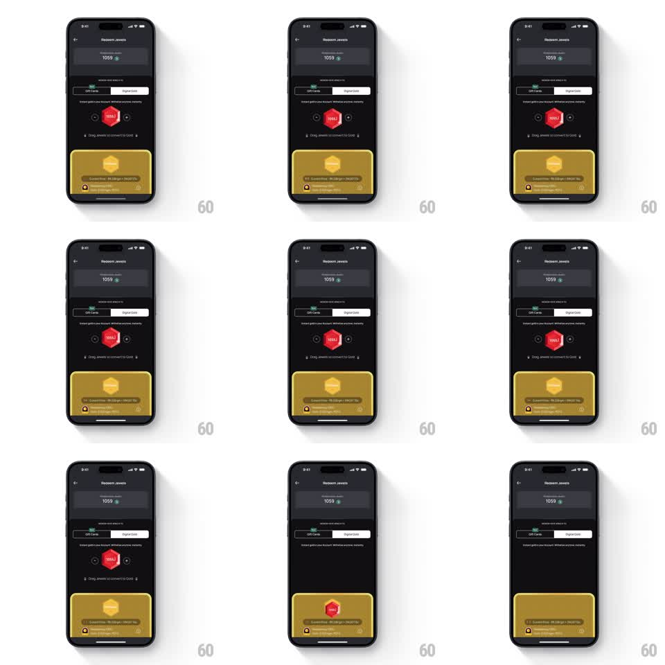

Media
Frame-by-frame

Rebuild this interaction 1:1: Jupiter's jewel conversion - drag the red jewel badge downward into the gold tray at the bottom to convert it.

Rebuild this interaction 1:1: Jupiter's jewel conversion - drag the red jewel badge downward into the gold tray at the bottom to convert it. ## Integration Integration: stack-agnostic spec - springs given as stiffness/damping, timed motions as duration + curve; map every value to your framework and animation library of choice. ## Scene Dark redeem screen: jewel balance header, a Gift Cards / Digital Gold segmented control, a red hexagonal jewel badge with count between two small orbit dots, "Drag Jewels to convert to Gold" hint with a down chevron, and a gold conversion tray card at the bottom. ## Motion spec Pattern: drag-to-drop into target tray, gesture-driven. - The jewel badge idles with a soft bob (+-6px vertical, 1.6s sine loop); the orbit dots pulse gently. - Touch down: the badge lifts (scale 1 to 1.08, shadow deepens, 150ms) and tracks the finger 1:1 vertically (slight horizontal freedom). - As the badge crosses the tray's top edge, the gold tray brightens and scales up (1 to 1.03, 200ms) as a target state; the chevron hint fades out. - Drop inside the tray: the badge shrinks and fades into the tray's center (250ms, ease-in), the tray flashes its gold fill, and the conversion amount rolls in (~400ms, ease-out). - Drop anywhere else: the badge springs back to its slot (spring stiffness 300 damping 18) and the tray returns to rest. ## Calibration - The tray's armed state must be obvious before the release - brightening after the drop is too late to guide aim. - The bob pauses the instant the finger lands; no idle motion fights a live drag. ## Reduced motion Tap the tray to convert with a fade instead of the drag. ## Don't miss - The down chevron under the hint - it is the only affordance, so it reads as a direction, not decoration. - The badge's jewel count stays visible on the badge through the whole drag.